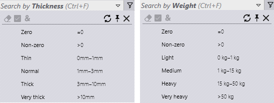
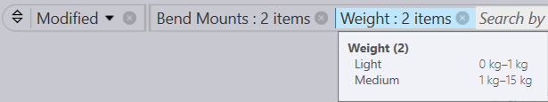

| Command | Shortcut | Description |
|---|---|---|
| Clear Selection | Ctrl + X | Unselects all selected choices and refreshes the filter items view. |
| Select Highlighted |
Ctrl + A | Selects all highlighted choices. This command stays disabled if item highlighting is not applicable for the selected field. |
| Apply All |
& | Applies ALL (vs ANY) selected choices to the filter match. |
| Pin In/Out Menu |
Ctrl + Down/Up | When pinned, the dropdown menu stays open even when the current focus moves to another window. |
| Close Menu |
Escape | Closes the dropdown menu. |
Typically, choice items are prepared based on the field semantics. For instance, for all fields representing a datetime (aka timestamp), the choices display a date or a date range value – Today, Yesterday, Last 3 days etc. Images below display such range filters for Thickness and Weight fields.

Range filter values are unit aware and slightly different values are used for metric and inches units. This is done to show friendlier values which are easier to identify (so a length value 5” is used instead of 5.08”). Just like expression-based filters, these filters can be added to the filter list. The filter button label displays number of selected items, if multiple choices are selected. Placing the mouse over the filter button displays the selected choices. Click on the filter button again to edit in the search box.
